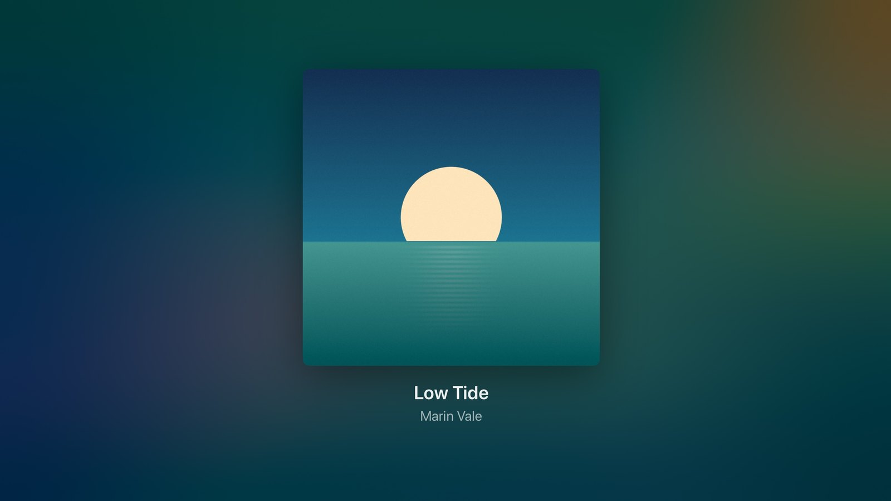

Cover Art for Sonos
Now playing, on the big screen. An Apple TV app.

Cover Art shows the cover of whatever your Sonos speakers are playing on your TV, over a slow gradient drawn from the artwork's own colours. Leave it on while you listen. When one room goes quiet and another starts playing, it follows the music there.
What you need
- An Apple TV running tvOS 18 or later.
- Sonos speakers on the same home network as the Apple TV.
Using the remote
| Left / Right | Previous / next song |
| Click, or Play/Pause | Play or pause |
| Up | Choose a room, group every room, or ungroup |
| Back | Close the room list, or leave the app |
Nothing shows on screen until you press something; then a quiet row under the title shows what the press did.
Troubleshooting
It keeps saying “Looking for Sonos speakers…”. Check that the Apple TV and the speakers are on the same network. Guest networks, and some mesh or business routers, keep devices apart; put the Apple TV on your main network. Press Select on that screen to see a demo meanwhile.
There is no cover. Some sources, such as a few radio stations and line-in, send no artwork. The title and artist still show.
The screen went to the screensaver. Cover Art keeps the Apple TV awake only while music is playing, so it can sleep once the music stops.
Your soundbar is playing TV sound. That is not shown; the app waits for music.
Contact
Questions, problems or ideas: open an issue on GitHub.